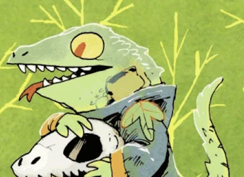
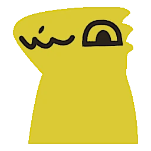
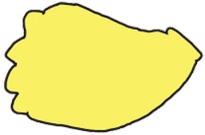
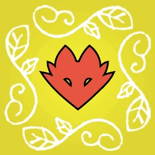
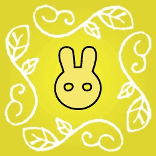
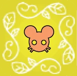
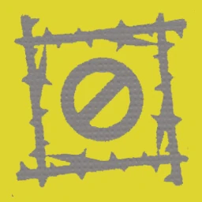

Same hand-inked paper, same 3px ink edge. The Cult hosts the party: hats on heads, gardens get ribbons, outcasts float off as balloons.

No hat: paper bunting across the top, confetti around, frosting ring. Used on the player rail, lobby seat, faction dock.

2D token gets a tiny hat. 3D: hat mesh parented to lizard-warrior.glb head.

Same icon, flat party hat on top (matches the warrior). Board header + score track.
Same square token, bow on top in the suit colour. 3D: garden.glb gets a bow on its roof.



Same marker, berry bow on top, like the gardens.

Hat · bunting · candle · gift (open lobby seat) · paper confetti. All ink-edged, no gradients.